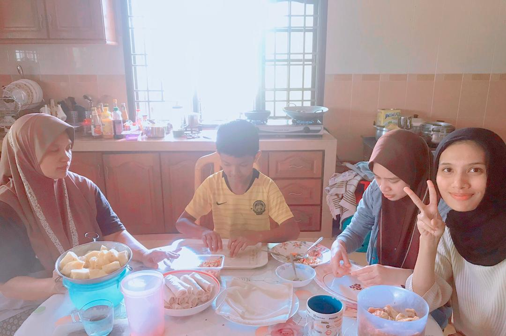
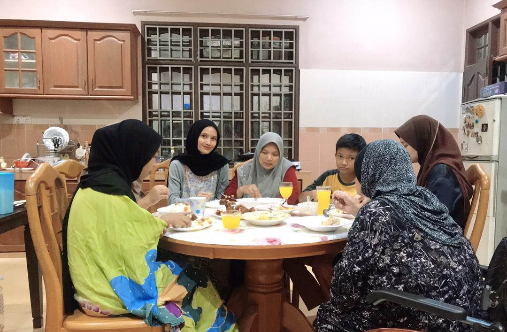
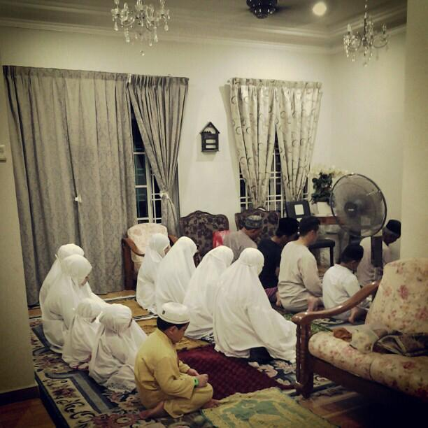
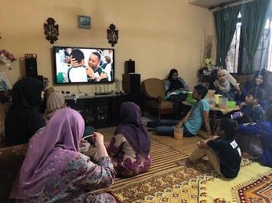
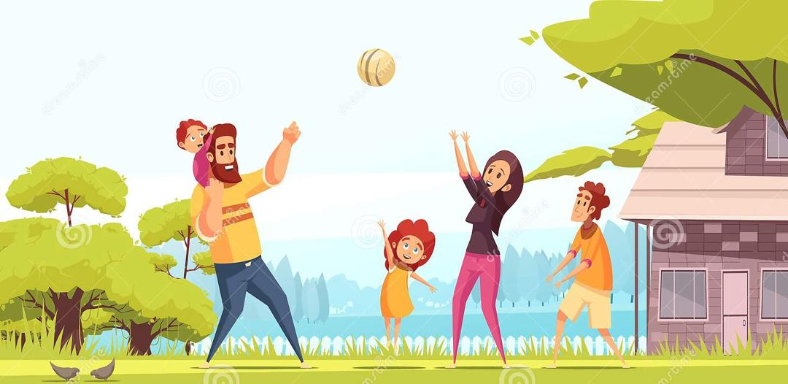

The Malaysia government have announced lockdown (MCO) to help control coronavirus, including closing all schools, ordering people to stay inside unless they need to leave the house to buy food or medicine. With that in mind, I have do the great activities for me that I hope will help me get through this crisis.
Corona virus lockdown make me being a better person. This is because i gain many skills during lockdown and it's makes my life more interesting. Here are some of the best activities that I do to overcome being bored during lockdown :
I have make cookies, cakes, brownies and others food with my family. Cooking is a great lesson in measuring, ingredients, and of course, making delicious goodies. I love cooking and yes, this activity make my cooking skill increase.
Family meals lead to healthier food choices. Eating with family is importance of shared family time at the dinner table. Often, this is the only time when all my family members are all together in one place. 
"Jemaah" prayer gets my family prayer together at one place. This brings us closer to Allah. After prayer, we also recite Al-Quran together. 
My family and I have been watching a lot of movies together during this lockdown. Many movies that we've been watching such as hollywood, Kdrama, and all types of movies that suitable to watch for my family. We also watch "berita" to know news about corona virus progress. This make we feel happy because we can spent happy time together and release stress. 
Me and my family also do the team sports at home such as playing badminton. We're enjoy playing together and we're exercise too.
Families who share everyday activities together form strong emotional ties. Studies have found that families who enjoy group activities together share a stronger emotional bond as well as an ability to adapt well to situations as a family. In positive side, I think this lockdown is a great way to bond with my family. It's make our family share every favourite activities together. I hope my family will stay doing all the activities during this lockdown together and stay being close to each other even after lockdown and forever. I love my family :) Go to Google